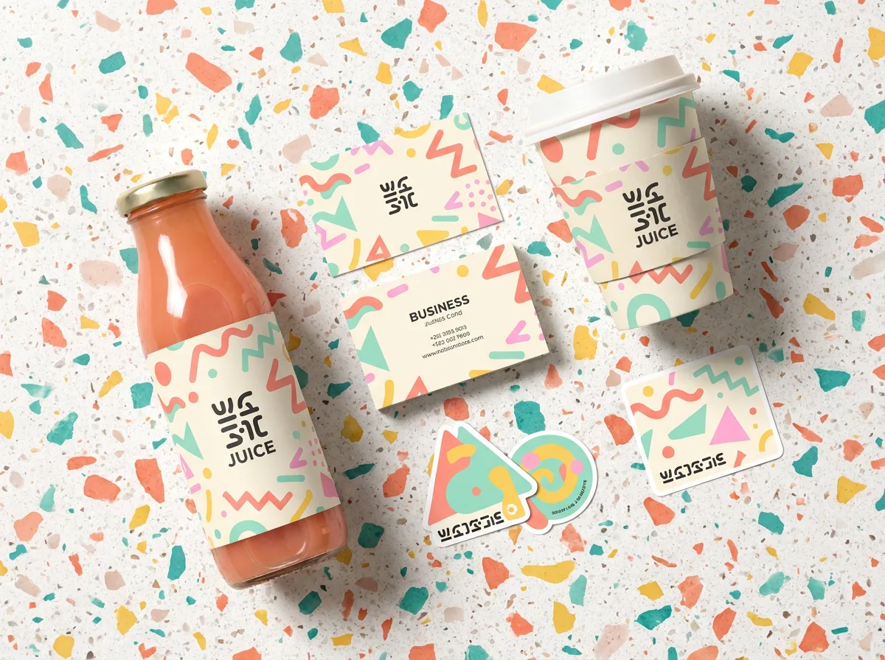
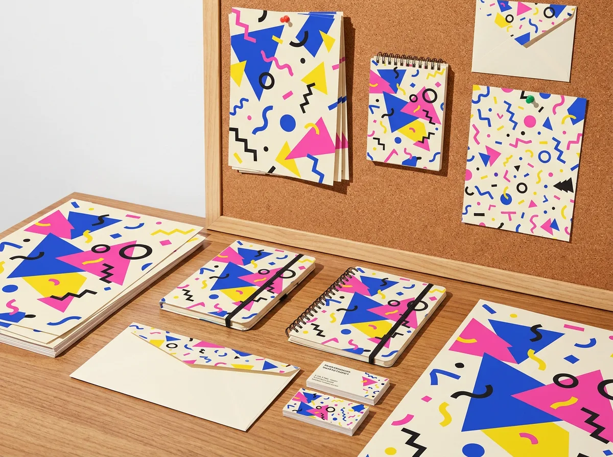

01
品牌識別 Branding
標誌、色彩、字體與圖形系統,建立一套可以長期延展的品牌資產與使用規範。
從零到一的品牌打造,或既有品牌的全面翻新,我們把策略、設計與執行整合成一條清楚的路。
標誌、色彩、字體與圖形系統,建立一套可以長期延展的品牌資產與使用規範。
海報、社群、活動主視覺與簡報模板,讓品牌在每個觸點都說同一種語言。
從結構到圖面,設計在貨架上會被看見、被拿起、被分享的包裝。
品牌動態識別、短影音與互動動畫,讓靜態的視覺真的動起來。
每個專案都從一個提問開始:這個品牌,要怎麼被記住?

替新創氣泡飲品牌打造從命名到貨架的整套繽紛識別,上市三個月鋪進 120 間通路。

一套可無限延展的活動視覺系統,從主視覺到動態識別與週邊,售票首週完售。
釐清品牌定位、受眾與競品,找出真正的差異點。
提出設計方向與視覺語言,用草稿快速對齊期待。
細修標誌、色彩、字體與應用,建立完整品牌資產。
產出品牌規範與素材包,並協助上線與後續延展。
— 林宛蓁,FIZZ POP 共同創辦人